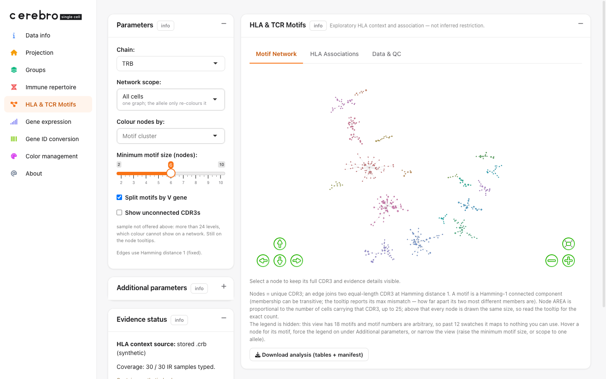
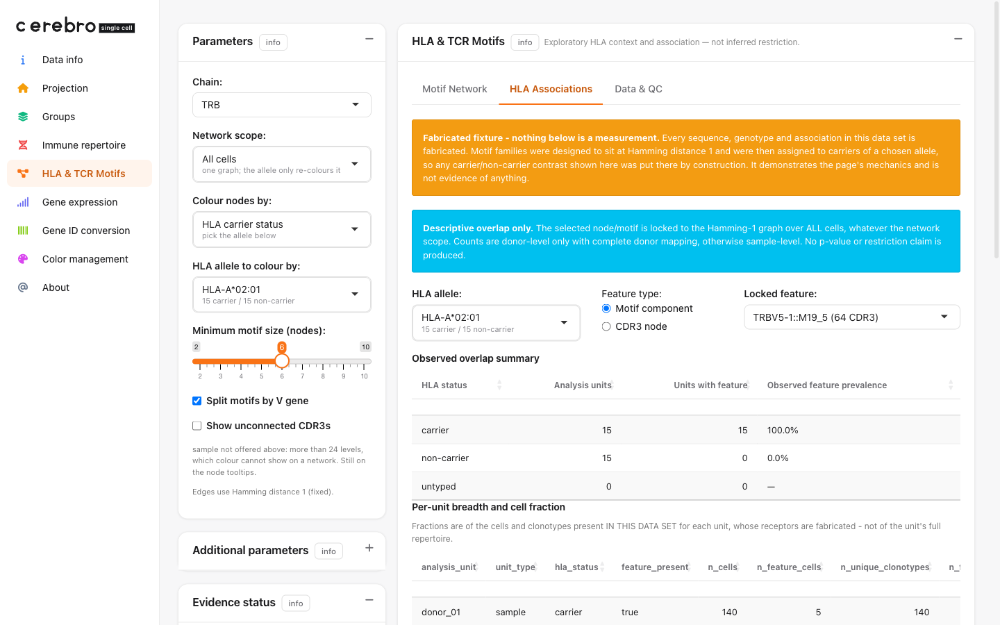
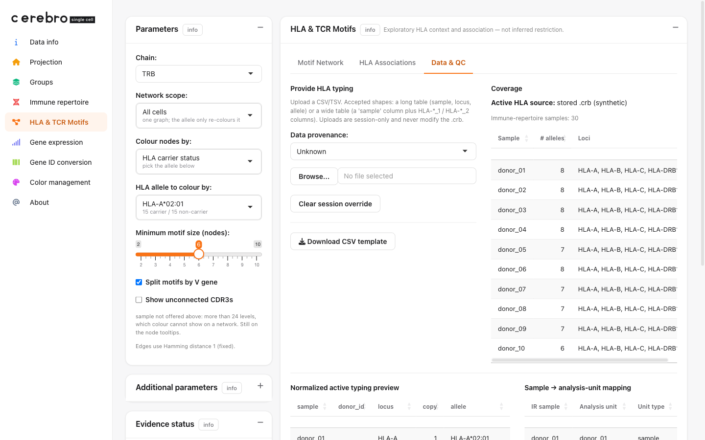

HLA & TCR Motifs: from synthetic data to an interactive app
Xuesong Wang
24 July, 2026
Source:vignettes/hla_tcr_motifs.Rmd
hla_tcr_motifs.RmdWhat this guide does
CerebroNexus ships a standalone HLA & TCR Motifs page. This guide takes you all the way from nothing to a running app on that page: we invent a small immune data set from scratch, save it in Cerebro’s file format, launch an app on it, and tour the page.
You will build the data set step by step, and after each step we
print the object you just made so you can see exactly what changed.
Every code block runs on its own — the only packages you need are base R
plus Matrix, Seurat, and
CerebroNexus, and nothing is downloaded.
If your data is bulk TCR sequencing rather than single cells, read the companion guide “HLA Associations on bulk TCRβ with real donor HLA” instead; it uses real genotypes and a slightly different object.
The two ideas the page is built on
A motif network of T-cell receptors. Every T cell carries a receptor whose most variable part is a short amino-acid string called the CDR3 — this is the piece that actually touches the antigen. The page draws one dot per unique CDR3 and connects two dots when their CDR3s are the same length and differ by exactly one amino acid (this one-letter difference is called Hamming distance 1). A connected clump of such dots is a motif: a little family of near-identical receptors. Motifs matter because receptors that recognise the same antigen often converge on very similar CDR3s.
HLA context. A T cell does not see an antigen floating free; it sees a peptide held up by an HLA molecule on another cell’s surface. Which HLA molecules a person has (their genotype) shapes which receptors they can use. So the page lets you colour each CDR3 by whether it comes from carriers of a chosen HLA allele, and it tabulates how a motif co-occurs with carriers versus non-carriers.
One honesty rule, up front. Sharing an allele with a
receptor is a hint, never a proof. A CD8 T cell in a donor who
carries HLA-A*02:01 might be restricted by that
allele — but the donor has up to six class-I alleles and the cell could
use any of them. So the page always says candidate
co-occurrence, not confirmed restriction, and it counts
donors, not cells (two cells from one donor are not two
independent pieces of evidence). Proving a real restriction needs
population statistics plus wet-lab pMHC validation, which this page does
not do.
Why the demo data is invented
Real single-cell TCR data almost never forms a motif network, and it helps to know why before we fake one. There are roughly 20¹⁴ possible CDR3 sequences, so an ordinary repertoire is spread impossibly thin across that space: a few thousand cells produce only a handful of one-letter-apart pairs, and the network comes out nearly empty. Dense motif families in real life come from selection — when many people mount a response to the same antigen, their receptors converge — not from simply having more cells. To make the page’s machinery visible, we therefore design a few motif families on purpose. Nothing below is a measurement; it exists only to drive the buttons.
The workflow in miniature
Before the step-by-step, here is the whole thing at a glance. Only
three lines are cerebro-specific — the three
@misc slots — and everything else is ordinary Seurat plus a
little data-faking:
# ... build an ordinary Seurat object `seurat` with cells + a UMAP (Steps 1-3)
# ... build `ir_data` (receptors) and `hla_wide` (genotypes) (Steps 1 & 4)
seurat@misc$immune_repertoire <- ir_data # receptors -> motif network
seurat@misc$hla_typing <- hla_wide # genotypes -> HLA context
seurat@misc$hla_typing_source_type <- "synthetic" # provenance -> honest labelling
exportFromSeurat(seurat, file = "demo_hla_tcr_toy.crb",
experiment_name = "toy_hla_tcr", organism = "hg",
groups = c("sample", "cell_type"))
launchCerebro(crb_file_to_load = "demo_hla_tcr_toy.crb") # the page appears in the sidebarThe rest of this guide fills in each piece and shows you the data at every step.
The three things the page reads
The page needs three optional pieces of information, all attached to
a Seurat object under object@misc:
@misc slot |
what it holds | what it drives |
|---|---|---|
immune_repertoire |
one table of receptor sequences per sample | the motif network |
hla_typing |
each donor’s HLA genotype | the HLA colouring and the Associations table |
hla_typing_source_type |
where the genotype came from (genotyped /
imputed / synthetic /
unknown) |
provenance, so a made-up genotype is never mistaken for a real one |
exportFromSeurat() picks all three up automatically. We
build them one at a time.
Build a synthetic Seurat object
Step 1 — donors and their HLA genotypes
We invent twelve donors, D01–D12.
HLA-A*02:01 is our teaching anchor: we
give it to exactly the first six donors, so later the app opens on a
clean 6-carrier / 6-non-carrier split. DRB1*15:01 is a
class-II anchor carried by the first five.
We store this as a wide table: one row per donor,
two columns per gene (HLA-A_1, HLA-A_2, …),
which is how a genotyping spreadsheet usually looks. Keeping a
donor_id column is what makes the app count at the donor
level.
donors <- sprintf("D%02d", 1:12)
a1 <- c(rep("A*02:01", 6), "A*01:01", "A*03:01", "A*01:01", "A*03:01", "A*11:01", "A*24:02")
a2 <- c("A*01:01", "A*03:01", "A*11:01", "A*24:02", "A*01:01", "A*03:01",
"A*02:01", "A*02:01", "A*03:01", "A*01:01", "A*24:02", "A*11:01")
drb1_1 <- c(rep("DRB1*15:01", 5), "DRB1*03:01", "DRB1*04:01", "DRB1*07:01",
"DRB1*01:01", "DRB1*13:01", "DRB1*11:01", "DRB1*04:01")
drb1_2 <- c("DRB1*03:01", "DRB1*04:01", "DRB1*07:01", "DRB1*01:01", "DRB1*13:01",
"DRB1*15:01", "DRB1*11:01", "DRB1*04:01", "DRB1*03:01", "DRB1*07:01",
"DRB1*01:01", "DRB1*13:01")
hla_wide <- data.frame(
sample = donors,
donor_id = donors,
"HLA-A_1" = a1, "HLA-A_2" = a2,
"HLA-B_1" = rep(c("B*07:02", "B*08:01"), 6),
"HLA-B_2" = rep(c("B*44:02", "B*35:01"), 6),
"HLA-C_1" = rep(c("C*07:01", "C*05:01"), 6),
"HLA-C_2" = rep(c("C*04:01", "C*06:02"), 6),
"HLA-DRB1_1" = drb1_1, "HLA-DRB1_2" = drb1_2,
check.names = FALSE, stringsAsFactors = FALSE
)Look at what you built — one row per donor, the first few columns:
head(hla_wide[, 1:6], 4)#> sample donor_id HLA-A_1 HLA-A_2 HLA-B_1 HLA-B_2
#> 1 D01 D01 A*02:01 A*01:01 B*07:02 B*44:02
#> 2 D02 D02 A*02:01 A*03:01 B*08:01 B*35:01
#> 3 D03 D03 A*02:01 A*11:01 B*07:02 B*44:02
#> 4 D04 D04 A*02:01 A*24:02 B*08:01 B*35:01
#> dim(hla_wide): 12 rows x 10 columnsNotice the first four donors all carry A*02:01 in one of
their two HLA-A slots — that is the anchor doing its
job.
Two things that trip people up:
-
check.names = FALSEis mandatory. R’s default would silently renameHLA-A_1toHLA.A_1, and the reader matches columns on the literal textHLA-, so the rename makes every allele “disappear”. - Only the genes
HLA-A,HLA-B,HLA-C,HLA-DRB1are offered in the app. DQ and DP are two-chain molecules that need extra pairing rules, so they are stored but not shown in the allele pickers.
Step 2 — one row per cell
Now the cells: one sample per donor, sixty cells each (720 in total), split into five cell types. We put the class-I story in CD8 T cells and the class-II story in CD4 T / Treg, which keeps the biology self-consistent later.
comp <- c(`CD8 T` = 24, `CD4 T` = 20, Treg = 6, B = 6, Mono = 4) # 60 cells / donor
meta <- do.call(rbind, lapply(donors, function(d) {
data.frame(sample = d, cell_type = rep(names(comp), comp), stringsAsFactors = FALSE)
}))
meta$barcode <- sprintf("%s_%04d", meta$sample, seq_len(nrow(meta)))
rownames(meta) <- meta$barcodeLook at what you built — a plain cell table plus the overall composition:
#> sample cell_type barcode
#> D01_0001 D01 CD8 T D01_0001
#> D01_0002 D01 CD8 T D01_0002
#> D01_0003 D01 CD8 T D01_0003
#>
#> B CD4 T CD8 T Mono Treg
#> 72 240 288 48 72Every cell has a unique barcode; that barcode is the key
everything else joins on.
Step 3 — a minimal expression matrix and Seurat object
The HLA page needs no gene-expression at all, but a Cerebro data set expects a matrix and one 2-D projection, and the Gene expression tab is friendlier if a few real gene symbols are searchable. So we fake Poisson counts, bump each cell type’s own markers, and attach a toy UMAP by hand — no real clustering run is required.
markers <- c("CD8A", "CD8B", "CD3D", "CD4", "IL7R", "FOXP3", "IL2RA",
"MS4A1", "CD79A", "CD14", "LYZ")
genes <- c(markers, sprintf("GENE%04d", seq_len(600 - length(markers))))
counts <- matrix(rpois(length(genes) * nrow(meta), lambda = 0.2),
nrow = length(genes), dimnames = list(genes, meta$barcode))
# lift each cell type's own markers so the types separate in the toy UMAP
lift <- list(`CD8 T` = c("CD8A", "CD8B", "CD3D"), `CD4 T` = c("CD4", "IL7R", "CD3D"),
Treg = c("FOXP3", "IL2RA", "CD3D"), B = c("MS4A1", "CD79A"),
Mono = c("CD14", "LYZ"))
for (ct in names(lift)) {
cols <- which(meta$cell_type == ct)
counts[lift[[ct]], cols] <- counts[lift[[ct]], cols] +
rpois(length(lift[[ct]]) * length(cols), lambda = 8)
}
counts <- as(counts, "CsparseMatrix")
seurat <- CreateSeuratObject(counts = counts, meta.data = meta)
seurat <- NormalizeData(seurat, verbose = FALSE)
# a toy 2-D embedding: one Gaussian blob per cell type
centres <- rbind(`CD8 T` = c(-5, 4), `CD4 T` = c(5, 4), Treg = c(6, -3),
B = c(-6, -4), Mono = c(0, -6))
emb <- centres[meta$cell_type, ] + matrix(rnorm(nrow(meta) * 2, sd = 0.8), ncol = 2)
colnames(emb) <- c("UMAP_1", "UMAP_2"); rownames(emb) <- meta$barcode
seurat[["umap"]] <- CreateDimReducObject(embeddings = emb, key = "UMAP_", assay = "RNA")
# exportFromSeurat reads nUMI / nGene columns by default; provide them
seurat$nUMI <- seurat$nCount_RNA
seurat$nGene <- seurat$nFeature_RNAAt this point seurat is an ordinary Seurat object with
600 genes, 720 cells, a umap reduction, and our
sample / cell_type labels — nothing
HLA-specific yet.
Step 4 — the receptors, with motif families designed in
This is the heart of the demo, so we go slowly.
A motif family is a set of CDR3s that are all one edit apart. We grow one with a branching walk: start from a random CDR3, then repeatedly pick an existing member and change a single interior letter. Because each new member is one edit from its parent, the whole family is automatically Hamming-1 connected.
AA <- strsplit("ACDEFGHIKLMNPQRSTVWY", "")[[1]] # the 20 amino acids
rand_cdr3 <- function(len) paste0("CASS", paste(sample(AA, len - 5, TRUE), collapse = ""), "F")
make_family <- function(n, len = 15) {
members <- rand_cdr3(len)
while (length(members) < n) {
base <- members[sample.int(length(members), 1)] # pick an existing member
chars <- strsplit(base, "")[[1]]
pos <- sample(5:(len - 1), 1) # choose an interior position
chars[pos] <- sample(setdiff(AA, chars[pos]), 1) # mutate it
cand <- paste(chars, collapse = "")
if (!cand %in% members) members <- c(members, cand)
}
members
}See a family — one call returns a clump of near-identical CDR3s (each differs from an earlier one by a single amino acid, shown in bold):
make_family(6)#> CASSQLHKRFKQF F F
#> CASSQLHKRFKQF P F <- last-but-one letter F -> P
#> CASS D LHKRFKQFFF <- position 5 Q -> D
#> CASSQLHKRFKQF L F <- last-but-one letter F -> L
#> CASSQLH P RFKQFPF <- position 8 K -> P
#> CASSQLHKRF G QFFF <- position 11 K -> G(The exact letters are random, so you will get different sequences — but they will always form a one-edit-apart family.)
Now we place six such families onto cells. Families 1–4 live in the
CD8 T cells of HLA-A*02:01 carriers (a class-I story);
family 5 lives in the CD4 T cells of DRB1*15:01 carriers
(class II); family 6 is scattered over random donors so it will come out
“Mixed”. Each family gets its own V gene so the page’s
split-by-V option keeps them apart.
fam_spec <- list(
list(size = 12, v = "TRBV20-1", lineage = "CD8 T", donors = donors[1:6]),
list(size = 10, v = "TRBV28", lineage = "CD8 T", donors = donors[1:6]),
list(size = 9, v = "TRBV19", lineage = "CD8 T", donors = donors[1:6]),
list(size = 8, v = "TRBV7-9", lineage = "CD8 T", donors = donors[1:6]),
list(size = 8, v = "TRBV5-1", lineage = "CD4 T", donors = donors[1:5]),
list(size = 7, v = "TRBV9", lineage = "CD4 T", donors = donors[c(3, 7, 9, 11)])
)
# eligible cells (T cells, ~90% receptor coverage), drawn from a per-(donor, lineage) pool
t_meta <- meta[meta$cell_type %in% c("CD8 T", "CD4 T", "Treg"), ]
t_meta <- t_meta[runif(nrow(t_meta)) < 0.90, ]
pool <- split(t_meta$barcode, list(t_meta$sample, t_meta$cell_type), drop = TRUE)
take <- function(donor, lineage) { # hand out one free cell, then remove it
key <- paste(donor, lineage, sep = ".")
if (is.null(pool[[key]]) || length(pool[[key]]) == 0) return(NA_character_)
bc <- pool[[key]][1]; pool[[key]] <<- pool[[key]][-1]; bc
}
assign <- data.frame(barcode = character(), v_gene = character(), cdr3 = character())
for (fs in fam_spec) {
cdr3s <- make_family(fs$size)
for (i in seq_along(cdr3s)) {
d <- fs$donors[(i - 1) %% length(fs$donors) + 1]
bc <- take(d, fs$lineage)
if (!is.na(bc)) assign <- rbind(assign, data.frame(barcode = bc, v_gene = fs$v, cdr3 = cdr3s[i]))
}
}
# every other T cell with a receptor gets a random singleton — the polyclonal background
bg <- setdiff(t_meta$barcode, assign$barcode)
assign <- rbind(assign, data.frame(
barcode = bg,
v_gene = sample(sprintf("TRBV%d-1", 2:29), length(bg), TRUE),
cdr3 = vapply(sample(12:17, length(bg), TRUE), rand_cdr3, character(1))
))The last move is to pack these assignments into the shape
scRepertoire (and therefore the page) expects. Each chain
of a cell is one underscore-joined slot, and within a chain the
gene names are dot-joined as V.J.C; the CDR3 amino acids
live in a parallel CTaa string. Here every cell has a
single TRB chain:
tcr <- merge(assign, meta[, c("barcode", "sample")], by = "barcode")
tcr$CTgene <- sprintf("%s.TRBJ2-7.TRBC2", tcr$v_gene) # V.J.C
tcr$CTaa <- tcr$cdr3 # the CDR3 amino acids
tcr$CTnt <- NA_character_
tcr$CTstrict <- sprintf("%s;%s", tcr$v_gene, tcr$cdr3)
ir_cols <- c("barcode", "CTgene", "CTnt", "CTaa", "CTstrict")
ir_data <- lapply(split(tcr, tcr$sample), function(df) df[, ir_cols, drop = FALSE])Look at what you built — a named list, one table per sample, holding five columns:
#> [1] "D01" "D02" "D03" ... "D12"
#>
#> barcode CTgene CTnt CTaa CTstrict
#> D01_0001 TRBV20-1.TRBJ2-7.TRBC2 <NA> CASSFIHAHWQQEVF TRBV20-1;CASSFIHAHWQQEVF
#> D01_0003 TRBV20-1.TRBJ2-7.TRBC2 <NA> CASSFIFAHWQHFVF TRBV20-1;CASSFIFAHWQHFVF
#> D01_0004 TRBV28.TRBJ2-7.TRBC2 <NA> CASSWMDCEPRHFWF TRBV28;CASSWMDCEPRHFWFSee how the page will read this: from CTgene it splits
out the V gene (TRBV20-1), and from CTaa it
takes the CDR3. The first two rows are the same family —
CASSFIHAHWQQEVF and CASSFIFAHWQHFVF are a
couple of edits apart — which is exactly the structure the motif network
will draw.
Step 5 — attach the contracts and export
Attach the three @misc slots and export. This is the
moment the plain Seurat object becomes an HLA-aware Cerebro file.
seurat@misc$immune_repertoire <- ir_data
seurat@misc$hla_typing <- hla_wide
seurat@misc$hla_typing_source_type <- "synthetic" # be honest about provenance
exportFromSeurat(
seurat,
file = "demo_hla_tcr_toy.crb",
experiment_name = "toy_hla_tcr",
organism = "hg",
groups = c("sample", "cell_type")
)That writes a ~200 KB .crb. You can inspect it without
opening the app, and this is where you feel the transformation
the export performed. The wide genotype table you wrote in Step 1 has
become a tidy long table — one row per donor × gene ×
copy — with the HLA- prefix normalised back on and
provenance stamped:
crb <- readRDS("demo_hla_tcr_toy.crb")
head(crb$getHLATyping()[, c("sample", "donor_id", "locus", "copy", "allele", "source_type")], 4)#> sample donor_id locus copy allele source_type
#> D01 D01 HLA-A 1 HLA-A*02:01 synthetic
#> D02 D02 HLA-A 1 HLA-A*02:01 synthetic
#> D03 D03 HLA-A 1 HLA-A*02:01 synthetic
#> D04 D04 HLA-A 1 HLA-A*02:01 syntheticNotice A*02:01 came back as HLA-A*02:01:
the app normalises whatever spelling you feed it. And the receptors
really do form a network:
seg <- CerebroNexus:::hla_parse_ir_segments(crb$immune_repertoire, "TRB")
g <- CerebroNexus:::hla_build_motif_graph(seg, by_v = TRUE, min_nodes = 6)
c(nodes = igraph::gorder(g), edges = igraph::gsize(g), families = igraph::components(g)$no)#> nodes edges families
#> 54 49 6Fifty-four CDR3s, forty-nine one-edit links, six families — the six we designed.
Launch a Shiny app on the data set
createShinyApp() wraps a self-contained app directory
around one or more .crb files. Its arguments are
how you preconfigure the app — the welcome text, colours,
whether users may upload their own data, and so on.
createShinyApp(
cerebro_data = "demo_hla_tcr_toy.crb",
result_dir = "hla_app", # the app bundle is written here
welcome_message = "Synthetic HLA & TCR demo",
show_upload_ui = TRUE, # let users also upload their own .crb
launch_browser = TRUE
)For a quick look without building a bundle, launch straight from the file:
launchCerebro(crb_file_to_load = "demo_hla_tcr_toy.crb")Either way, once the data set loads, an HLA & TCR Motifs item appears in the sidebar — it shows up only because a TRB chain was detected.
Using the page
The page has a parameter column on the left and three tabs on the right: Motif Network, HLA Associations, and Data & QC.
Motif Network

The controls, top to bottom:
- Chain — TRB here; TRA also appears when the data carries it.
- Network scope — All cells builds one graph and the allele only re-colours it, so a colour change never rebuilds (and never re-arranges) the network.
- Colour nodes by — motif cluster, cell type, MHC context, HLA carrier status, or sample of origin.
- Minimum motif size — hides clumps smaller than the slider (default 6), which sweeps away the polyclonal singletons and leaves the designed families.
- Split motifs by V gene — treats CDR3s that use different V genes as different receptors.
Colouring by HLA carrier status is the view the page exists for. Pick the anchor allele and every dot becomes Carrier (only carriers of that allele have this CDR3), Non-carrier, or Mixed:

Because family members are mostly private to one donor, an ordinary background dot just inherits its single donor’s status, so the background is naturally a red/blue mix. The signal you read is a solid carrier island standing out from that mix — not “red versus grey”. “Mixed” appears only for a CDR3 shared across donors on both sides of the allele.
HLA Associations

This tab is descriptive only — no p-value, no
restriction claim. You lock a feature (a whole motif or
a single CDR3), pick an allele, and read how often
carriers, non-carriers, and untyped donors show that feature. The orange
banner is triggered by
hla_typing_source_type = "synthetic": because we invented
both the sequences and the genotypes, any contrast here was placed there
on purpose. The blue banner reminds you that counts are donor-level
(when donor mapping is complete) and that the feature is measured on the
global graph regardless of the network scope.
Data & QC

This tab shows what the app actually parsed: how many alleles each
donor has, the normalized long typing table, and the sample →
analysis-unit mapping. You can also upload your own HLA
typing here (CSV or TSV, long or wide) to override the stored genotypes
for the session — handy when a .crb shipped without typing.
Uploads never modify the .crb, and “Download CSV template”
gives you the exact expected shape.
Parameters reference
| Control | Effect |
|---|---|
| Chain | TRA / TRB — which receptor chain the network is built on |
| Network scope | All cells (one graph, allele re-colours) vs. a per-allele subset |
| Colour nodes by | motif cluster / cell type / MHC context / HLA carrier status / sample origin |
| HLA allele to colour by | the allele whose carrier status colours the dots |
| Minimum motif size | hide clumps below N dots (default 6) |
| Split motifs by V gene | a dot’s identity is V gene + CDR3, not CDR3 alone |
| Show unconnected CDR3s | also draw singleton dots (off by default) |
| Feature type (Associations) | lock a whole motif or a single CDR3 |
Bringing your own single-cell data
The walkthrough above invented every input so it would run
with no downloads. In real work you already have these pieces from your
own pipeline — you only need to reshape them into the three
@misc slots and export. Nothing here is HLA-specific magic;
it is the ordinary Cerebro export plus three assignments.
You are typically starting from:
| You have | From | Becomes |
|---|---|---|
| a Seurat object (clusters, a UMAP, cell types) | your scRNA-seq pipeline | the .crb itself, via
exportFromSeurat()
|
| paired TCR / VDJ | Cell Ranger filtered_contig_annotations.csv →
scRepertoire combineTCR()
|
@misc$immune_repertoire |
| each donor’s HLA genotype | a genotyping lab report, or HLA imputed from the same reads | @misc$hla_typing |
1 — your Seurat object
Whatever produced the object is fine. The HLA page needs only that it
has cells with barcodes, a sample (donor) column in
@meta.data, and ideally a cell_type column and
a UMAP. If you can already export it to Cerebro today, you are set; the
two slots below are the only additions.
seurat # e.g. 20,000 cells, an RNA/SCT assay, a umap reduction
head(seurat@meta.data[, c("sample", "cell_type")])The column that matters for HLA counting is sample: it
is the key that joins a cell to its donor’s genotype, so the
sample values in @meta.data must match the
sample values in your HLA table. If one donor
contributed several 10x lanes, collapse them to one sample
/ donor_id per person — otherwise carrier counts
double-count that donor.
2 — receptors from Cell Ranger + scRepertoire
If you ran 10x 5’ VDJ, Cell Ranger writes one
filtered_contig_annotations.csv per sample. scRepertoire’s
combineTCR() turns those into exactly the per-sample list
of CTgene / CTaa / CTnt /
CTstrict tables Cerebro stores — so its output is
the immune_repertoire slot, with no reshaping:
library(scRepertoire)
contig_list <- lapply(sample_dirs, function(d) {
read.csv(file.path(d, "filtered_contig_annotations.csv"))
})
combined <- combineTCR(contig_list, samples = donor_ids) # a list named by donor
seurat@misc$immune_repertoire <- combinedThe page reads two things out of each row: the V gene (the first
dot-separated token of CTgene) and the CDR3 amino acids
(CTaa). Everything else is carried through untouched. Watch
the barcodes: if combineTCR(samples =) prefixes them
(donorA_AACCTGA-1), the same prefix must be on the
@meta.data barcodes (via RenameCells) or the
receptor–cell join silently misses. The companion Immune Repertoire
Analysis vignette walks the full scRepertoire path.
3 — HLA typing: genotyped or imputed
Your genotypes come from one of two honest sources, and the app asks
you to say which — this is what stamps source_type and
keeps a prediction from being mistaken for a lab call:
-
genotyped— a real HLA typing assay (sequence-based typing, NGS typing, or an array the lab called into alleles). Only this source is eligible for confirmatory downstream claims. -
imputed— alleles predicted from data:arcasHLA/OptiType/HLA-HDrun on the same RNA or exome reads, or SNP-array imputation. Fine for exploration; the app labels it so the uncertainty travels with the result.
The table can be the wide shape a spreadsheet exports (one row per donor, two columns per gene) …
hla_wide <- read.csv("my_hla_typing.csv", check.names = FALSE) # check.names is mandatory
head(hla_wide)
#> sample HLA-A_1 HLA-A_2 HLA-B_1 HLA-B_2 HLA-C_1 HLA-C_2 HLA-DRB1_1 HLA-DRB1_2
#> donorA A*02:01 A*01:01 B*07:02 B*44:02 C*07:01 C*05:01 DRB1*15:01 DRB1*03:01
#> donorB A*03:01 A*24:02 B*08:01 B*35:01 C*04:01 C*06:02 DRB1*04:01 DRB1*07:01… or the long shape (one row per donor × gene × copy) if that is what your lab delivers. Either is accepted. Attach it and record where it came from:
seurat@misc$hla_typing <- hla_wide
seurat@misc$hla_typing_source_type <- "genotyped" # or "imputed"check.names = FALSE is mandatory: R’s default renames
HLA-A_1 to HLA.A_1, and the reader matches on
the literal HLA-, so the rename makes every allele vanish
silently. Only HLA-A, -B, -C,
-DRB1 are shown in the allele pickers (DQ / DP need
heterodimer pairing and are stored but not interpreted). Allele spelling
is normalised for you — A*02:01, HLA-A*02:01,
and A0201-style strings all resolve to the same allele.
4 — export
The same call as any Cerebro export; the three slots ride along:
exportFromSeurat(
seurat,
file = "my_study.crb",
experiment_name = "my_study",
organism = "hg",
groups = c("sample", "cell_type")
)Then launchCerebro(crb_file_to_load = "my_study.crb"),
or wrap a shareable bundle with createShinyApp(). The
HLA & TCR Motifs item appears whenever the object
carries a TRA/TRB chain; HLA typing is optional.
No genotypes yet? Ship the .crb with
just the receptors. The page still draws the motif network, and a
collaborator can upload an HLA CSV/TSV in the Data &
QC tab for their session — no rebuild, and the
.crb is never modified.
Common questions
My motif network is almost empty on real data — is that a bug? No — that is the expected result, and it is exactly why this demo’s families are invented. A real repertoire is spread thinly across ~20¹⁴ possible CDR3s, so genuine one-edit pairs are rare. Dense motifs come from antigen-driven selection, not from having more cells.
Can I use my own HLA genotypes? Yes.
addHLATyping() (or object@misc$hla_typing)
accepts a wide table (sample + HLA-*_1/_2), a
canonical long table, or a named list. You can also upload a CSV/TSV in
the Data & QC tab to override the stored typing for
one session.
I have TRA, not TRB. Set Chain to TRA in the parameter column; the page offers whichever chains it detects in the data.
Why does the page count donors instead of cells? An HLA association is a property of a person’s genotype. Cells from one donor share that genotype, so they are not independent observations — counting them as if they were would inflate any apparent contrast.
See also
-
Introduction to the cerebroApp workflow (Seurat) —
the general Seurat →
.crbexport basics, if this is your first Cerebro export; the HLA slots above just ride along with it. - HLA Associations on bulk TCRβ with real donor HLA — the companion workflow for bulk immunosequencing: real genotypes, no single cells, and the positive-control caveat that comes with them.
-
Immune Repertoire Analysis in CerebroNexus — the
scRepertoire-based module that produces the same
@misc$immune_repertoireslot from real 10x data. -
?exportFromSeurat,?createShinyApp, and?Cerebro_v1.3(seeaddHLATyping/getHLATyping).
Getting help
- Questions and bug reports: https://github.com/mihem/CerebroNexus/issues.
- Function reference and other articles: https://mihem.github.io/CerebroNexus/.
- Provenance of every shipped demo data set:
data-raw/DATASETS.md.
Session info
sessionInfo()
#> R version 4.6.0 (2026-04-24)
#> Platform: x86_64-pc-linux-gnu
#> Running under: Ubuntu 24.04.4 LTS
#>
#> Matrix products: default
#> BLAS/LAPACK: /nix/store/ba0pync7rmzsq32xxaz9l9hs3zj7hil4-blas-3/lib/libblas.so.3; LAPACK version 3.12.0
#>
#> locale:
#> [1] LC_CTYPE=en_US.UTF-8 LC_NUMERIC=C
#> [3] LC_TIME=en_US.UTF-8 LC_COLLATE=en_US.UTF-8
#> [5] LC_MONETARY=en_US.UTF-8 LC_MESSAGES=en_US.UTF-8
#> [7] LC_PAPER=en_US.UTF-8 LC_NAME=C
#> [9] LC_ADDRESS=C LC_TELEPHONE=C
#> [11] LC_MEASUREMENT=en_US.UTF-8 LC_IDENTIFICATION=C
#>
#> time zone: Etc/UTC
#> tzcode source: system (glibc)
#>
#> attached base packages:
#> [1] stats graphics grDevices utils datasets methods base
#>
#> loaded via a namespace (and not attached):
#> [1] digest_0.6.39 desc_1.4.3 R6_2.6.1 fastmap_1.2.0
#> [5] xfun_0.59 cachem_1.1.0 knitr_1.51 htmltools_0.5.9
#> [9] rmarkdown_2.31 lifecycle_1.0.5 cli_3.6.6 sass_0.4.10
#> [13] pkgdown_2.2.0 textshaping_1.0.5 jquerylib_0.1.4 systemfonts_1.3.2
#> [17] compiler_4.6.0 tools_4.6.0 ragg_1.5.2 bslib_0.11.0
#> [21] evaluate_1.0.5 yaml_2.3.12 otel_0.2.0 jsonlite_2.0.0
#> [25] rlang_1.2.0 fs_2.1.0 htmlwidgets_1.6.4